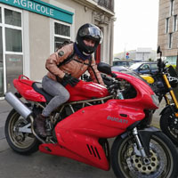

L'histoire
L'histoire d'une motarde qui choisissait mal ses motos
-

Janvier 2017
Mes débuts à moto
C'est l'année où j'ai décidé de me lancer dans un projet fou: partir dessiner l'Europe en me déplaçant à moto. N'ayant pas encore le permis, ni de moto, ce fut le début de 6 mois de leçon de conduite intense et de séance de mécanique pour remettre en état l'épave de mon père.
-
Juin 2017
Grand départ
Après avoir eu tous les problèmes possibles et imaginable au cours de la restauration, me voila partie. Franchement motarde, bien équipée, mais inconsciente.
-

Quelques jours plus tard
Premier accident
Après 3 jours à rouler sans arrêt, la fatigue, la chaleur et les graviers nous ont entrainé, ma belle moto et moi, au fond d'un fossé. Aucune blessure, mais c'était la fin du voyage pour ma belle Honda cb 400 four.
-
Juin 2017 - Avril 2018
A la recherche d'une nouvelle moto
Après une chute, on ne rêve que de remonter en selle, mais on en a peur aussi. Cette apréhension créé une nécessité urgente de remonter sur la première moto possible. Mais bien souvent, le manque de temps, le budget et les rêves nous font choisir à la légère.
-

Avril 2018
Une nouvel moto, un nouveau défi
Dans mon budget, rien à voir avec le style que je cherchais, mais disponible rapidement et surtout, originale et avec du caractère: c'est ce qui m'a convaincu de prendre ma belle Ducati 750 SSIE. Je l'ai prise alors que je n'étais même pas capable de faire demi tour sur un petit rond point. Mais c'était un nouveau défi et j'étais hyper motivée.
-
Mai 2018
Deuxième accident
Vous ne me croirez peut-être pas, mais deuxième accident, avec collision cette fois-ci, et encore une fois je m'en sors sans rien. Je suis rentrée de face dans une voiture en évitant celle de devant qui avait piler. Une sacrée frayeur.
-
Juillet 2018
Rapprendre et se remttre en question
Ayant constaté mes difficultés à piloter cette nouvelle moto, alors que la précédente me semblait être un vélo, j'ai choisi de participer à un stage de perfectionnement au pilotage, proposé par l'amdm. Ce fut une vrai prise de conscience. J'y suis arrivée en sachant que j'avais beaucoup à apprendre mais je ne m'attendais pas à progresser autant. C'est parcequ'ils m'ont fait prendre conscience de mes limites que j'ai pu apprendre à les contourner.
-
Aout 2018
La Bonne Bécanne
C'est de part mon expérience, et celles qu'ont partagé avec moi d'autres motards que je me suis rendu compte de l'importance du choix de sa moto, et de la difficultés de prendre en compte les bons critères. C'est pourquoi j'ai décidé de créer ce site internet, afin d'apporter une piste aux motards à la recherche de leur prochaine compagne de route.
-
Les critères principaux
La puissance
Sécurité
Maniabilité
Le look
Confort
Bricolage


DOSSIER
Ce dossier sera mis à jour régulièrement avec de nouvelles sections et des mises à jours.
L'objectif est de montrer: Les causes et circonstances des accidents de moto Accepter et apréhender les risques Connaître les différents types de moto et leurs caractéristiques
Statistique et étude de l'IFSTTAR et de la sécurité routière
TEXTE
Les méthodes pour avoir consciences des risques sans en avoir peur
Les méthodes pour se remettre d'un accident (témoignage de motards)
Le monde des motards a son propre vocabulaire qu'il est utile de savoir déchifrer avant de se confronter à l'achat d'une nouvelle moto. Cette section, inspirée du super livre "The Ride" a pour objectif de vous permettre de bien différencier les types de moto, de comprendre les raisons et les conséquences qu'impliquent les différents looks de moto.
Cette section sera enrichie par la suite, avec des images et tous le détail des types de moto. Nous ne montrerons dans cette première version qu'un seul genre à titre d'exemple.
Bonne route !
Restons en contact !
Si vous souhaitez des conseils, donner votre avis sur une moto, nous contacter pour plus d'information ou partager une expérience, une ballade, une histoire ou votre passion, n'hésitez pas à nous contacter
123-456-6789